Mathematical proofs (Rodin Tutorial)
From Event-B
By now, you should know how to create and edit models, and how to do simple proofs with help of the predicate prover. In this section, we will look at more complex proofs in mathematical settings. For this, it is advisable for you to have some knowledge of the theory, but you can also see this as a pure proving exercise. First, we try to perform a proof without the predicate prover in order to get familiar with all the tools. Then, you can try proving three further derived axioms by yourself.
Contents |
First proof on Transitive Closure
- Import the Closure project from the Closure.zip file. This project contains a simple mathematical model, in which f is a binary relation. The axioms define t to be the transitive closure of f. You will have to prove that 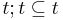.
- For that, we have to instantiate the s of 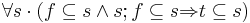 with 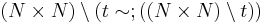. This instantiation is a Galois transform. The project Galois (to be imported from Galois.zip) shows the properties of galois transforms. Simply said, these transforms are a sort of inverse for the subset relation between relations. In the proof, this is useful, as we can easily derive the goal from the implication (Because of the main property of the Galois transform, 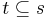 is equivalent to ). The first part of the condition of the axiom also becomes easy to prove, as 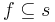 is equivalent to 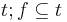. However, the second part of the condition, 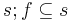 does not have such an easily provable equivalence. We will just have to believe that the instantiation also works here.
- If you want to check that the instantiation really does work, you can use the predicate prover now and it will succeed. Afterwards, prune the predicate prover step so that you can do the proof yourself.
- If the instantiation succeeded, you now should have a new, quite lengthy new hypothesis which has the form 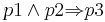, where p1, p2 and p3 are predicates. This hypothesis will help us to split the proof into three parts. First, we will prove p1, then p2, and last, we will derive our goal out of p3. To split the proof, click on the red arrow of the implication and choose “Apply Modus Ponens using this hypothesis”. If you now look at the pending subgoals by using the “Next Pending Subgoal” button in the Proof Control, you will see that the proof has been split into the three described parts above.
- We will start off proving the first subgoal 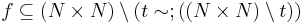. First of all, we need to translate the statement a bit more towards predicate logic. Click on the subset symbol in the goal and choose the first option (Remove inclusion in goal). As described, this translates the inclusion into predicate logic. If you look at the proof tree, you will see that the prover automatically has done another two steps, removing the quantifier and then the implication in the goal.
- Now, you will need to completely translate the goal into predicate logic. For this, click on any red symbol that appears in the proof goal until there is none left. Should you have any tilde operators or cross products in the selected hypothesis, then it will not hurt to translate them, too. To do that, click on the red “
 ” next to then. In the end, your proof should look like in Figure 2.
” next to then. In the end, your proof should look like in Figure 2.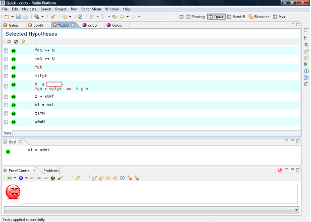 Figure 2: The proof after step 6 - As the goal appears to be provable from , 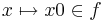 and 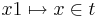, remove all the other hypotheses, if you like to keep your workbench tidy. This can be done by choosing the three hypotheses and then clicking the “Inverse selection” button first and then the “Remove hypotheses” button.
- To prove the current goal, we first prove that 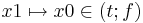. From that, 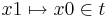 follows, because of . Add the hypothesis by entering it in the proof control and pressing the (ah) button. Once more, the proof will branch. For the first branch, click on the red “” symbol in the Proof Goal window to translate the goal into predicate calculus. You will then need to instantiate a variable, but the choice should be obvious if you look at the selected hypotheses. The second part of the proof can be solved by removing the “
 ” in and then instantiating correctly.
” in and then instantiating correctly.
- For the time being, we do not yet want to prove the second subgoal, but proceed with the last one. So review this subgoal by pressing the blue button in the proof control. The prover automatically skips to the next subgoal.
- The proof of the third subgoal will only require the hypothesis 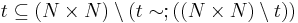. So you can remove all the others. Remove the inclusion in the hypothesis and in the goal in order to transform them towards predicate calculus. Then, click on the “” of the hypothesis 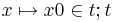 in order to introduce x1. You can now instantiate x with x1 and x0 with x0 in the hypothesis with the quantifiers, as is done in the proof of the derived axiom in the Galois project.
- After translating the hypothesis into predicate logic by pressing all “”, you get a rule that states 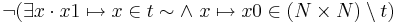. Click on the “
 ” to get a hypothesis with a universal quantifier.
” to get a hypothesis with a universal quantifier.
- Now, you will want to get this hypothesis into a better appliable form. By using rewrites (clicking on the red symbols), you should be able to transform it into 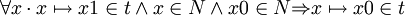. Try to get the hypothesis into the right form yourself. Should you completely mess something up, you can still go a few steps back in the proof tree by clicking on the “Backtrack from the current node” button in the proof control.
- The instantiation for x should now be obvious. After the instantiation, the smiley in the Proof Control will turn blue. This means that all the non-reviewed goals have been proven. So, you will now have to prove the second subgoal. Click on “Select the next review subgoal” to get there.
- The proof of the second subgoal begins similar to the others. Remove the inclusion in the goal and simplify the goal as far as possible. Next, translate the new selected hypotheses into predicate logic by clicking on the “” symbols in the selected hypothesis until there is none left. There should be one selected hypothesis that starts with a negation. Remove the negation in it. Now we get a hypothesis beginning with a universal quantifier. It should look like this, just the variable names might differ: 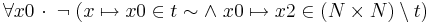.
- The hypothesis stated above can also be brought into a more easily comprehendible and directly appliable form. In the end, it should state something like 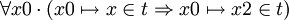, where names may vary. Get the hypothesis into the right form yourself using rewrites (similar to step 12). Now, the instantiation for x0 should be obvious, as there is only one variable that maps to x (In Figure 3, x1).
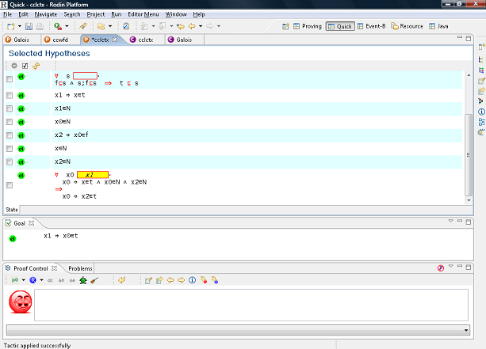 Figure 3: The proof at step 15 - The rest of the subproof is the same to step 8, except for the variable names. So you can either repeat these steps or try to copy the proof. To copy the proof, right-click on the part that you need on the proof tree where you added the hypothesis and choose copy. Then right-click on your current location and select paste. By all chance, the proof did not work due to the different names. Look in the proof tree for where the wrong name has been used and prune that part. You will have to redo that bit of the proof again.
{kind=link}
{kind=link}
Exercise: Derived Axiom 2
In Derived Axiom 2, you have to prove that 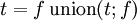. For this, you have to prove both directions (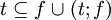 and 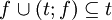). Start with the second part, as it is much easier. The first part also should not be too hard, if you instantiate the hypothesis with the quantifier as early as possible.
Exercise: Derived Axiom 3
Derived Axiom 3 is very similar to Derived Axiom 2. Proving also works in a very similar fashion, except that it takes a few steps more, as we do not have any axioms on (f;t). Then, Derived Axiom 1 usually is useful.
Exercise: Derived Axiom 4
Derived Axiom 4 states that 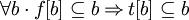. Once again, you will need the right instantiation of a hypothesis to succeed with the proof at some stage. Here, 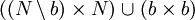 will be a good instantiation. This proof is quite lengthy, as there are many proofs by cases that you will need to perform. A lot of the cases can be solved by successfully adding the negation of a selected hypothesis and thus creating a contradiction.